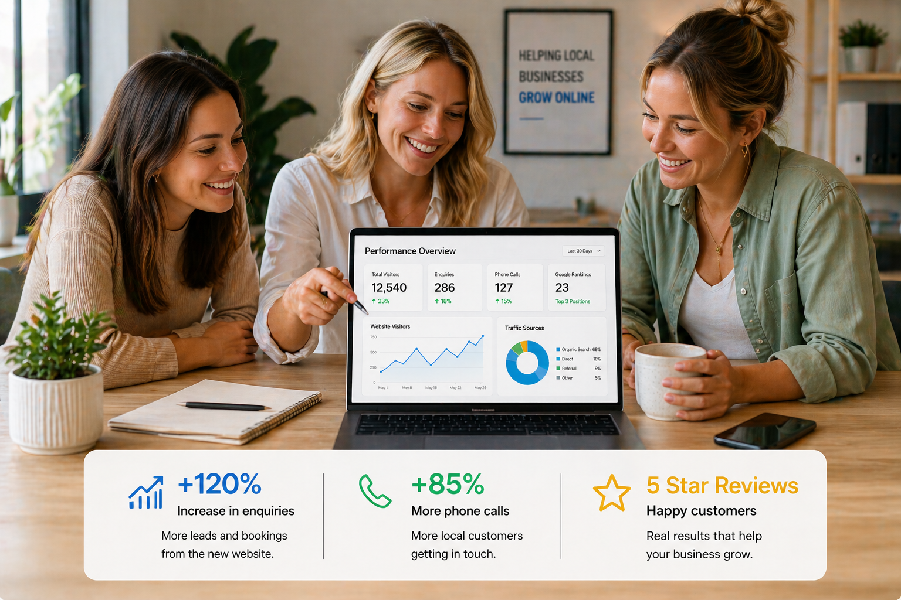

ABOUT CRANE PLATFORM LABS
Crane Platform Labs builds fast, mobile-friendly websites for businesses across Junee, Wagga Wagga, Albury, Cootamundra and regional NSW — designed to help local businesses get found on Google and generate real enquiries.
We work with tradies, cafés, service businesses and small local companies that need a professional online presence without the bloated agency process.
Our focus is simple: clean websites, strong local SEO foundations, mobile-first design and helping regional businesses build trust online.
WHY WE DO THIS
Many small businesses across regional NSW still rely heavily on word of mouth, Facebook pages or outdated websites that no longer reflect the quality of their business. When potential customers search online, businesses often struggle to appear clearly in Google results or build trust quickly.
Crane Platform Labs was created to help solve that problem. We focus on building fast, professional websites that help local businesses improve their visibility, look more established online and turn website visitors into real enquiries.
Our goal is not to create flashy agency websites filled with unnecessary complexity. We build practical, mobile-friendly websites designed specifically for tradies, cafés, service businesses and small companies across Junee, Wagga Wagga, Albury, Cootamundra and regional NSW.
Every website is built with performance, usability and local SEO foundations in mind — helping businesses create a stronger online presence and compete more effectively in today’s digital environment.

WHAT MAKES US DIFFERENT
Many websites look modern but fail to generate enquiries because they’re slow, confusing to use or not built with local search visibility in mind. We focus on what actually matters — helping businesses across regional NSW build trust online and attract real customers.
We work with businesses across Junee, Wagga Wagga, Albury, Cootamundra and surrounding regional areas — providing a more local and hands-on approach than large city agencies.
No confusing tech talk or bloated agency process. Just clean, mobile-friendly websites that are easy to use and built for real businesses.
Every website is designed to help customers find your business on Google, build trust quickly and encourage more calls, bookings and enquiries.
REGIONAL NSW
Based in Junee, NSW, Crane Platform Labs works with businesses across Wagga Wagga, Albury, Griffith, Temora, Cootamundra, Young, Tumut and surrounding regional areas.
We build practical websites for tradies, cafés, service providers and small businesses looking to improve their online presence, build trust and generate more enquiries.
Explore our local website design services in Junee, Wagga Wagga, Albury, Cootamundra, Griffith and Temora.
READY TO START?
Fast, mobile-friendly websites built for regional NSW businesses looking to generate real enquiries and build a stronger online presence.